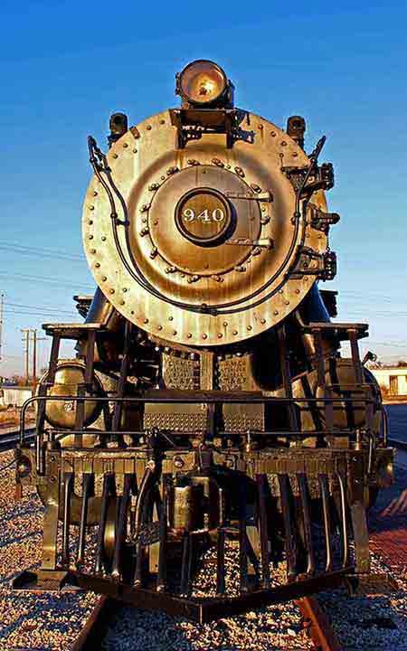
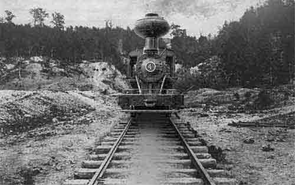

Full Steam Ahead, Train Fest

author unknown
The 48th Great Locomotive Chase Festival will sprawl across
downtown Adairsville from Friday through Sunday. The festival
celebrates Adairsville’s role in the railroad drama of 1862 when
Yankee spies, led by James Andrews, stole a Confederate locomotive
before they abandoned the train near Tunnel Hill. The festival was
started in 1968 when Marion Lacey, then principal at Adairsville
High School, sought something to replace the school’s Halloween
festival. The festival features carnival rides, arts and crafts
booths, food vendors, entertainment on two stages, a Saturday
morning parade and Saturday night fireworks. Mayor Kenneth Carson
described the event as sort of a citywide homecoming celebration
that doubles as a “unification mechanism.” Musical entertainment
will be staged at the gazebo on the city square throughout the
festival. Festival hours are Friday from 10 a.m. to 11 p.m.,
Saturday from 9 a.m. to 11 p.m. and Sunday from noon to 5 p.m.
Tickets are $3 and one admission fee allows visitors access to
events all three days. There is no admission for the Sunday
afternoon part of the festival.
The Great Locomotive Chase

Heritage Center & Museum
On the night of April 6th, 1862, a shadowy character named James
Andrews walked into the Third Division headquarters and introduced
himself to Union General Ormsby Mitchel. They met to discuss what
would eventually become one of the most well-known events of the
Civil War, the Great Locomotive Chase. This daring plan was
originally called “Andrews’ Raid”.
Andrews, a long time Union sympathizer who was a spy in
search of personal profit, proposed that he and his “raiders” should
be authorized to wreck the Western & Atlantic Railroad in exchange
for a large amount of money. This plan helped Mitchel immensely,
since his division was planning on capturing the important rail hub
in Chattanooga.
Disabling the W&A Railroad, would make
his job much simpler. If the railroad was taken out of commission,
Chattanooga would be cut off from the south and the city would be an
easy target. To surprise the enemy, Mitchel and Andrews agreed to
synchronize their actions for April 11. Andrews selected volunteers
from 3 regiments under Mitchel’s command. He asked specifically for
a few soldiers who could handle a locomotive.
Three men
were picked specifically as a result: Private William Knight,
Corporal Martin Jones Hawkins, and Private Wilson Brown all had
experience on railroads. They were given civilian clothing and told
to travel in small groups. They were to reassemble in Marietta, GA.,
on April 10 and hijack a train for Chattanooga the following
morning. Their plan was to hijack a train headed north, then along
the way tear up tracks, cut telegraph lines, and burn bridges.
Find out what happened. . .
Read Now!